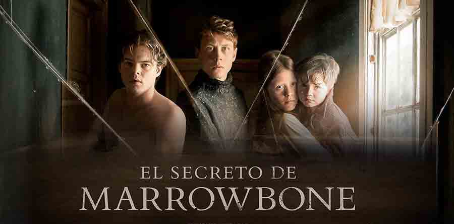

Black Phone
“The Black Phone” cuenta la historia de Finney, un joven de 13 años que es secuestrado por “El raptor”, un asesino en serie que utiliza espeluznantes máscaras y ha estado aterrorizando a los ciudadanos de su pueblo local.
El niño es encerrado en una habitación oscura a prueba de sonido en donde encuentra un teléfono antiguo con el que puede comunicarse con las víctimas del asesino. Estas jugarán vital para poder liberarse del cautiverio y escapar de un sangriento final. Lo curioso es que el teléfono no debería funcionar, porque los cables están cortados.
Personalmente de las mejores peliculas sobre secuestro/suspense/terror que he visto.
Ver trailer

El secreto de los Marrowbone
1969. América Rural. Cuatro jóvenes hermanos, Jack, Billy, Jane y el pequeño Sam y su madre, Rose, llegan a Marrowbone, una casa americana abandonada. Huyeron de Inglaterra dejando atrás a un padre violento y un pasado criminal, esperando empezar una nueva vida en un lugar donde nadie les conoce. Pronto entablan amistad con Allie, una chica local que trae luz a sus tristes vidas. Pero Rose muere de manera inesperada, dejando a sus hijos solos y sin recursos. Los hermanos deciden enterrar a su madre en el jardín y mantener su muerte en secreto para que no puedan separarles o mandarles de vuelta a Inglaterra. Pero mientras intentan sobrevivir sin la supervisión de un adulto, escondiéndose del mundo y sin otro lugar adonde ir, una amenazante presencia empieza a rondar la vieja casa.
Una pelicula con escenas intrigantes y giros que el espectador no esperaria, con un final perturbador.
Ver trailer
REC (1,2,3,4)
REC 1: Una reportera de televisión acompaña a un equipo de bomberos durante toda una noche. En la primera de sus salidas nocturnas, lo que parecía una intervención rutinaria se va a convertir inesperadamente en un infierno, en una noche de pesadilla y en un documento televisivo de dramatismo único.
Si te gustó la primera te recomiendo ver las demás.
Ver trailer
SAW (1-9)
Es una película que relata un ejercicio violento, sangriento, psicológicamente agotador y un tanto terrorífico. Adam y Gordon, se despiertan separados por un cadáver y encadenados en una guarida. Están siendo los protagonistas de un juego que proviene de un asesino en serie.
NO ACONSEJABLE PARA SENSIBLES
Ver trailer
Verónica
En los años 90, en pleno Madrid, una adolescente que acaba de realizar la Ouija con sus amigas tiene que hacer frente a las consecuencias de lo que ha desencadenado, pues ha comenzado a ser perseguida por presencias sobrenaturales que la amenazan con dañar a los miembros de su familia.
Ver trailer
Dark Web
Unos amigos son víctimas de una amenaza en línea: morirán si se desconectan o llaman a la policía. La noche de diversión que habían planeado se transforma así en una pesadilla espeluznante.
Ver trailer